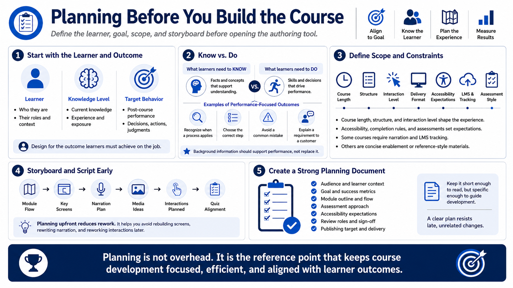

Planning the Course Before Building
Connecting to LMS... Progress: in progress

Narration
The most important development work often happens before any screens are built. Start by defining the audience, their current level of knowledge, and what they are expected to do after the course. A useful course goal is not simply that learners understand a topic. It should describe a decision, action, behavior, or judgment they need to perform more reliably.
Separate what learners need to know from what learners need to do. Background information may be necessary, but it should support performance. For example, a learner may need to recognize when a process applies, choose the correct step, avoid a common mistake, or explain a requirement to a customer. Those outcomes lead to better screen design and better assessment questions than a long list of facts.
Planning also defines scope and constraints. Decide the course length, structure, interaction level, delivery format, accessibility expectations, completion rules, and assessment style. Some courses need a polished narrated experience. Others need a concise reference-like structure. Some must report completion to an LMS. Others may be used as informal enablement material.
Storyboarding and scripting reduce rework. A storyboard does not need to be elaborate, but it should show module flow, key screens, narration, media ideas, interactions, and quiz alignment. Opening the authoring tool before the instructional plan is clear usually leads to rearranging screens, rewriting narration, and rebuilding interactions later. Planning is how a course avoids becoming a decorated document.
A strong planning document should be short enough for stakeholders to read but specific enough to guide development. Include the audience, goal, module outline, assessment approach, accessibility expectations, review roles, and publishing target. That document becomes the reference point when someone asks to add unrelated content or change the course direction late in the project.